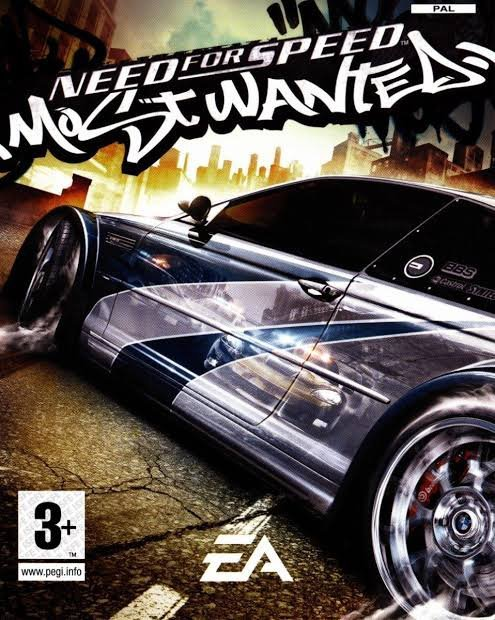

Need for Speed Most Wanted

Descripción
La acción en el mundo abierto de Need for Speed Most Wanted te da la libertad de conducir a tu manera. Salta, coge atajos, cambia de coche, pasa desapercibido o ve a las zonas que mejor se adapten a los puntos fuertes de tu vehículo. Ábrete paso entre los policías y rivales con tus habilidades, la tecnología punta de tu coche y un montón de nitro. Todo se centra en ti, tus amigos y una selección de coches sin igual. Veamos de qué eres capaz.
Grand Theft Auto: San Andreas

Hace cinco años Carl Johnson huyó de los rigores de la vida en Los Santos, San Andreas, una ciudad destrozada por las bandas, las drogas y la corrupción en la que las estrellas de cine y los millonarios hacen lo posible por evitar a los traficantes y a los pandilleros.
Estamos a principios de los noventa y Carl debe regresar. Su madre fue asesinada, su familia se rompe en pedazos y sus amigos de la infancia van por el mal camino.
Al regresar a su barrio, un par de policías corruptos lo acusan de homicidio. CJ se ve arrastrado a un viaje que lo llevará a cruzar todo San Andreas para salvar a su familia y obtener el control de las calles.
PlayStation 2
PlayStation 2 es el sucesor de PlayStation (PS1), y compite contra la consola Dreamcast de Sega, la consola Nintendo GameCube de Nintendo y el sistema Xbox de Microsoft. También compite contra el sistema Windows XP del mismo fabricante que el sistema Xbox. A pesar del lanzamiento de su sucesora, PlayStation 3, en 2006, la consola siguió en el mercado y con un importante número de usuarios, compitiendo con las consolas de la séptima generación, siendo la única consola que ha logrado tener un ciclo de vida tan largo que compite con la generación posterior a la suya.
Desde su salida, la PlayStation 2 ha logrado vender 155 millones de unidades aproximadamente, convirtiéndose en la videoconsola más vendida de la historia. En 2010, coincidiendo con el periodo navideño, Sony lanzó al mercado un televisor LCD que incorpora en su base una versión adaptada de la PlayStation 2.
La PlayStation 2 es un sistema de entretenimiento aun disponible económicamente para las personas que les gustan los videojuegos, la cual alberga una gran variedad de géneros en sus juegos para todas las edades.